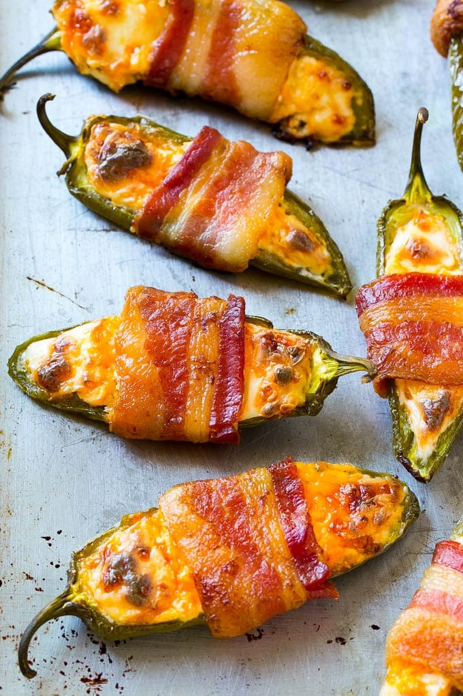

Bacon Wrapped Chili Peppers Recipe

The most delicious cooked chilis or jalapenos you could ever have. Perfect addition to any dinner and it is a wonderful recipe for any week night or a weekend barbeque.
Ingredients
- 10-12 Medium size chili or Jalapeno peppers
- 2 packs of cream cheese
- A bag of shredded cheddar or any other shredded cheese you prefer
- Paprika
- Salt
- Pepper
- Garlic Powder
- One pack of thin sliced bacon
- A pack of tooth picks (if you are going to grill the peppers)
Steps and Instructions
- Take all the peppers and make sure to rinse them of any dirt or contaminants.
- Grab a medium sized kitchen knife and cut the top and bottoms of the peppers halfway through.
- Now, make a lengthwise cut meeting the slice made on the top and bottom of the peppers.
- Once all the peppers have been sliced, use your thumb to pry open the cuts and remove all the seeds and internal parts of the peppers.
- After all the seeds and insides are removed, grab a mixing bowl and add your cream cheese.
- Then, mix in half a cup of shredded cheese along with a pinch of paprika, a pinch of garlic powder, and salt and pepper.
- Mix in the cheese and spices into the cream cheese, then use a spoon or your hands to put the cream cheese mixture into each of the peppers.
- Fill the peppers until the cuts made can just barely close shut.
- Once all the peppers are full of cream cheese you can grab your bacon.
- Wrap each individual pepper tightly with bacon and lay onto a baking sheet. If you want to grill the peppers then I recommend putting tooth picks through them to hold the bacon in place on the grill.
- Put the peppers in the oven at 375 degrees Fahrenheit for about 20 minutes.
- You can see the peppers are getting close to being done when the bacon changes color. Continue cooking to achieve the desired crispiness of the bacon.
- Remove from the oven and let them cool slightly before serving.